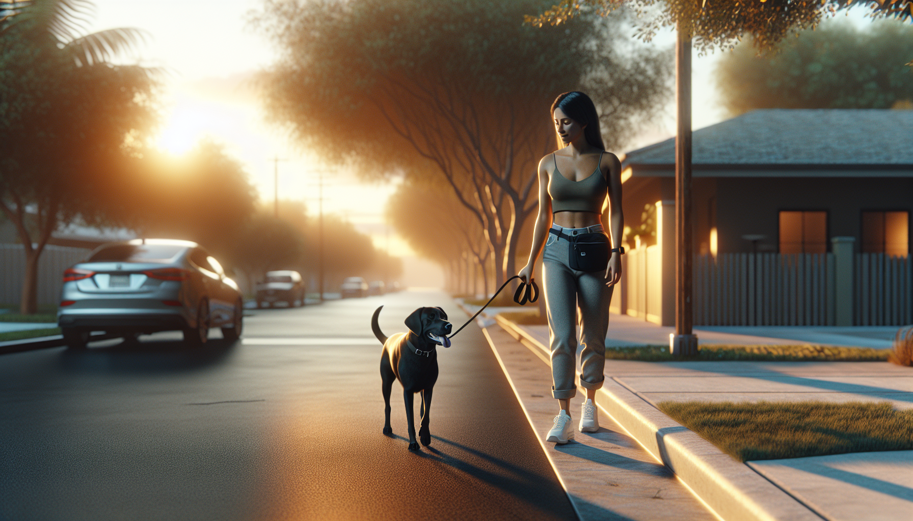

If every walk feels like a tug-of-war, you are not alone. Leash pulling is one of the most common complaints among dog owners, especially new puppy parents and people adjusting to life with a rescue dog. The good news is that pulling is a trainable behavior. With the right tools, clear communication, and consistent practice, you can teach your dog to walk politely without turning your daily stroll into a workout.
Dogs pull for simple reasons: they move faster than we do, the environment is exciting, and pulling often works. If your dog leans into the leash and gets closer to a smell, another dog, or the park entrance, the pulling has been rewarded. That does not mean your dog is stubborn or dominant. It means your dog has learned a pattern. To change it, we need to teach a better one.
In this guide, you will learn exactly how to stop your dog from pulling on the leash using positive reinforcement and practical, science-backed techniques that build focus and self-control.
Understanding the reason behind the behavior makes training much easier. Most dogs pull because the walk itself is rewarding. The outside world is full of scents, sounds, movement, and opportunities to explore. When pulling helps your dog reach those things faster, the behavior gets stronger over time.
There are also a few common contributing factors:
Instead of correcting the pulling harshly, the most effective approach is to prevent your dog from rehearsing it and reward the behavior you do want: staying near you with a loose leash.
Training is easier when your gear supports success. For most dogs, a well-fitted front-clip harness or a comfortable Y-shaped harness paired with a standard leash is a great place to start. A front-clip harness can reduce a dog's ability to power forward, while still allowing you to train kindly and clearly.
Helpful equipment includes:
Avoid tools that rely on pain, intimidation, or startle, such as prong collars or leash corrections meant to punish pulling. These methods can increase stress, damage trust, and may worsen reactivity in some dogs. Science-backed training focuses on teaching, not forcing.
Before expecting your dog to succeed on a busy street, start in a low-distraction environment like your living room, hallway, or backyard. This gives your dog a chance to learn the pattern without the overwhelming pull of the outside world.
Begin by rewarding your dog for being near you. Stand still with your dog on leash. The moment your dog looks at you, steps toward you, or keeps the leash loose, mark the behavior with a cheerful word like “yes” and give a treat near your leg. Repeat often.
Then take one or two steps. If your dog stays with you and the leash remains loose, mark and reward. Keep sessions short and easy. Your goal is to create a strong association: being close to you makes good things happen.
Focus on these early skills:
If your dog forges ahead, do not drag them back. Simply stop moving and wait for slack in the leash. The instant the leash loosens, reward and continue. This teaches your dog that pulling makes the walk pause, while a loose leash makes the walk move forward.
One of the simplest and most effective techniques for leash pulling is the stop-and-go method. It works because it removes the reward for pulling: forward motion.
Here is how to do it:
Consistency matters more than speed. If your dog sometimes gets to pull toward a tree, another dog, or the corner and other times does not, the behavior can become even more persistent. Try to be as clear as possible: tight leash means we stop, loose leash means we go.
For some dogs, changing direction can also help. If your dog surges ahead, turn and walk the other way for a few steps, then reward when your dog catches up and walks beside you. This keeps your dog tuned in to your movement and prevents them from locking onto the environment.
Many owners notice pulling but forget to reward the moments their dog is doing it right. Positive reinforcement is what makes polite walking stick. The more often your dog is paid for walking near you, the more valuable that position becomes.
Reward generously when your dog:
Use real-life rewards too. Sniffing is highly reinforcing for dogs. If your dog walks nicely for several steps, say a release cue like “go sniff” and let them investigate a patch of grass. This teaches your dog that self-control leads to freedom and fun.
At first, reinforce frequently, sometimes every few steps. As your dog improves, you can gradually space out treats and rely more on praise, sniff breaks, and access to the environment.
If your dog pulls hardest at the start of the walk, near other dogs, or in busy places, training alone may not be the full answer. You may also need better management.
Try these practical strategies:
For rescue dogs, remember that decompression matters. A newly adopted dog may need time to settle before they can handle stimulating walks. Lower your expectations early on and prioritize safety, predictability, and trust.
If your dog is not improving, a few small adjustments can make a big difference. Common leash-training mistakes include:
Also remember that leash walking is harder for some dogs than others. Adolescents, high-energy breeds, and dogs with a long history of pulling may need more repetition. Improvement is rarely perfectly linear, but steady practice pays off.
Sometimes leash pulling is mixed with barking, lunging, fear, or frustration around dogs, people, bikes, or cars. In those cases, the issue may be more than excitement. A certified positive reinforcement trainer or veterinary behavior professional can help you create a plan that addresses the emotional cause of the behavior, not just the leash symptoms.
Seek support if your dog:
Getting help early can prevent the behavior from becoming more ingrained and make walks safer and more enjoyable for everyone.
Learning how to stop your dog from pulling on the leash is less about controlling your dog and more about teaching a new habit. When you combine clear mechanics, the right equipment, consistent rewards, and realistic expectations, loose-leash walking becomes absolutely achievable.
Start small. Practice in easy places. Reward often. And remember that every calm, connected step is progress. Whether you are training a brand-new puppy, helping a rescue dog settle in, or working with an adult dog who has practiced pulling for years, patient positive reinforcement can transform your walks.
Get our full Dog Training eBook series — new titles added weekly.